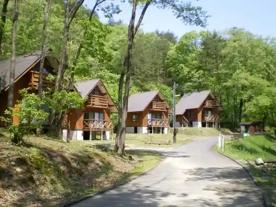
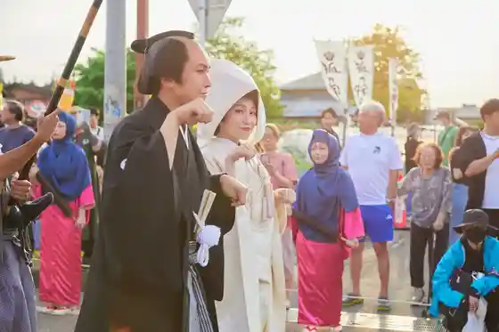
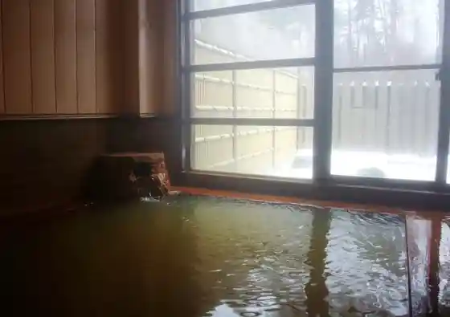

Kushima Kanko Kuri Sono
Aga, Niigata · 0254-95-3056 · Official / source link
Kaku Kami Kohan Seishonen Ryoko Village
Aga, Niigata · 0254-92-4186 · Official / source link

Tsugawa Kitsune no Yomeiri Gyoretsu
Aga, Niigata · 0254-92-4766 · Official / source link

Ka no Se Onsen Akayu
Aga, Niigata · 0254-92-4186 · Official / source link

Mikawa Kanko Ki no Ko Sono
Aga, Niigata · 0254-99-3773 · Official / source link
Tsugawa Onsen Kiyokawa Kogen Hoyo Center
Aga, Niigata · 0254-92-5530 · Official / source link
Aga Nogawa Line Yuransen
Aga, Niigata · 0254-99-2121 · Official / source link
Shogun Sugi
Aga, Niigata · 0254-99-2639 · Official / source link
Roadside Station Aga Village
Aga, Niigata · 0254-92-7727 · Official / source link
Roadside Station (Mikawa (Kyoboku Village)) (Kokudo 49 Go)
Aga, Niigata · 0254-99-3779 · Official / source link
Mikawa Kanko Yana Ba
Aga, Niigata · 0254-99-3677 · Official / source link
Ashi Sawa Kogen Habaru Park
Aga, Niigata · 0254-92-5522 · Official / source link
Naka no Sawa Keikoku Forest Park
Aga, Niigata · 0254-99-3710 · Official / source link
Kirin Yama Park
Aga, Niigata · 0254-92-4766 · Official / source link
Takigashira Marsh
Aga, Niigata · 0254-92-5764 · Official / source link
Ugan Raku Onsen Mikagura So
Aga, Niigata · 0254-95-2121 · Official / source link
Shichi Fuku Onsen Shichi Fuku So
Aga, Niigata · 0254-95-3550 · Official / source link
Kitsune no Yomeiri Residence
Aga, Niigata · 0254-92-0220 · Official / source link
Aga Nogawa Line no Autumn Leaves
Aga, Niigata · 0254-92-4766 · Official / source link
Oku Aga Furusato Kan (Kyukanchu)
Aga, Niigata · 0254-92-4508 · Official / source link
Roadside Station Aga Village
Aga, Niigata · 0254-99-2121 · Official / source link
Kirin Yama Kase Tozanguchi
Aga, Niigata · 0254-92-4766 · Official / source link
Kirin Yama Shuzo (Kabu) / (Kirin Yama)
Aga, Niigata · 0254-92-3511 · Official / source link
Kirin Yama Park
Aga, Niigata · 0254-92-4766 · Official / source link
Iide Yama Jitsukawa Tozanguchi
Aga, Niigata · 0254-92-4766 · Official / source link
Kaku Kami Yukitsubaki Sono
Aga, Niigata · 0254-92-4766 · Official / source link
Gokuraku Terano Naka Zakura
Aga, Niigata · 0254-95-2211 · Official / source link
Aga Kanko Gaido to Town Aruki
Aga, Niigata · 0254-92-4766 · Official / source link
Kusurishi Shimizu (Yakushishimizu)
Aga, Niigata · 0254-92-4766 · Official / source link
Ho Haru Sono
Aga, Niigata · 0254-92-3322 · Official / source link
Ugan Raku Gaku Muroya Tozanguchi
Aga, Niigata · 0254-95-2211 · Official / source link
Fufu Sakura
Aga, Niigata · 0254-99-2311 · Official / source link
Kotohira Shimizu (Konpirashimizu)
Aga, Niigata · 0254-92-4766 · Official / source link
Mikawa Onsen Ski Area
Aga, Niigata · 0254-99-3738 · Official / source link
Taibi Fudo Taki
Aga, Niigata · 0254-92-4766 · Official / source link
Aga Hina Meguri
Aga, Niigata · 0254-92-0220 · Official / source link
Ura Goto Naka no Sawanobori Yamaguchi
Aga, Niigata · 0254-92-4766 · Official / source link
Maru Fuchi Kanko Warabi Sono
Aga, Niigata · 0254-95-2766 · Official / source link
Hoshuyama Ishima Tozanguchi
Aga, Niigata · 0254-92-4766 · Official / source link
Hishigagaku Ishido Tozanguchi
Aga, Niigata · 0254-92-4766 · Official / source link
Katsura Shimizu (Katsurashimizu)
Aga, Niigata · 0254-92-4766 · Official / source link
Nihondaira Yama Tanizawa Tozanguchi
Aga, Niigata · 0254-92-4766 · Official / source link
Ozegasawa Cave
Aga, Niigata · 0254-92-3333 · Official / source link
Nichi Kurayama Goju Shima Tozanguchi
Aga, Niigata · 0254-92-4766 · Official / source link
Muroya Cave
Aga, Niigata · 0254-92-3333 · Official / source link
Ugan Raku Onsen
Aga, Niigata · 0254-95-2211 · Official / source link
Jomon Shimizu
Aga, Niigata · 0254-92-4766 · Official / source link
Kamikawa Bussan Chokubai Tokoro
Aga, Niigata · 0254-95-3546 · Official / source link
Uma no Kami Yama Tsunaki Tozanguchi
Aga, Niigata · 0254-92-4766 · Official / source link
Nishiyama Nikko Tera (Mokuzo Kongoriki Samurai Ritsuzo)
Aga, Niigata · 0254-92-3333 · Official / source link
Gokuraku Tera no Nonaka Zakura
Aga, Niigata · 0254-95-2211 · Official / source link
Doburoku Kin Yoshi
Aga, Niigata · 0254-95-3293 · Official / source link